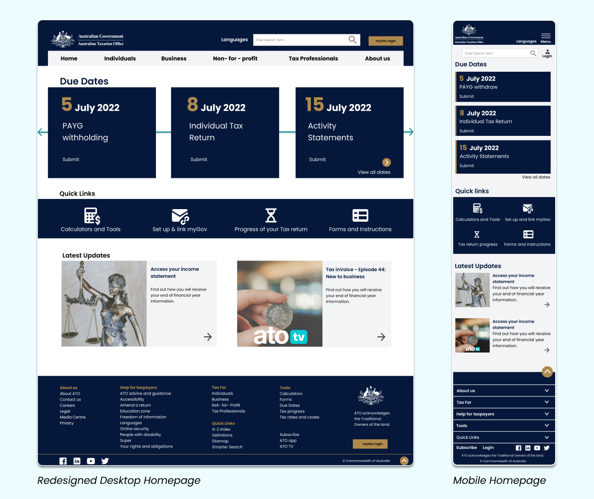
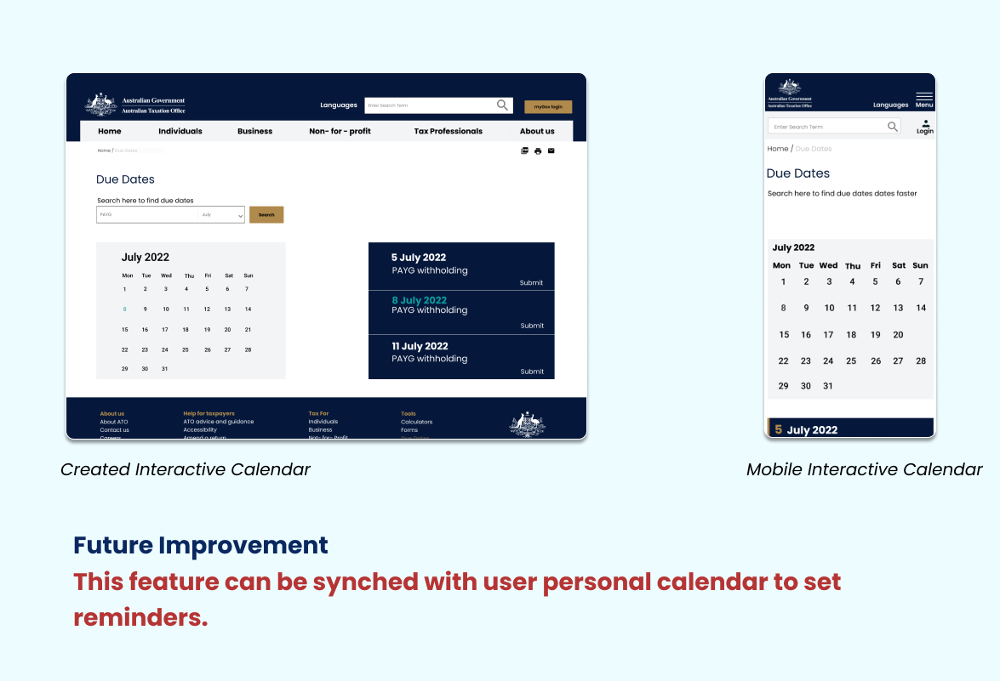

Redesign a responsive, intuitive, and aesthetically pleasing website to:
Helps users save time while finding Taxation information.
Reduce ATO phone call volume.
Meet accessibility standards.
My Role: UX/UI Designer
Duration: 4 weeks
Tools: Figma, Miro, Google Forms
About ATO
The Australian Taxation Office (ATO) is an Australian statutory agency and the principal revenue collection body for the Australian Government. The ATO has responsibility for administering the Australian federal taxation system, superannuation legislation, and other associated matters.
Problem
Although, all the necessary information is available on the ATO website, however, users are unable to intuitively click around the website and seek information.
Major issues: The website has a complex structure and the user is easily lost.
Minor issues: Hover dropdown menu, information overload, and difficult-to- understand categories lead to an unsatisfactory experience.
Design Process
Discover
Industry Analysis
Personas
Survey
Heuristic Evaluation
User Scenario
Define
Identify needs
User Path
Card Sorting
Information Architecture
Develop
Lo-Fi Wireframes
UI Style Guide
Hi-Fi Wireframes
Interactive Prototypes
Validate
Testing
Iterating
Industry Analysis
74% of people in Australia prefer to engage an accountant or a tax professional to lodge their tax returns.
Based on my findings user personas were created for accountants and self-taxpayers as they are the primary users of the ATO website.
User Personas
Usability Testing
5 Accountants and 3 self tax-payers who use the ATO website frequently were chosen for usability testing that was focused on gathering the information needed to lodge tax returns.
During testing, users struggled to navigate the website and felt frustrated by the overwhelming information.
Users showed a high desire to use the search option, which proved poor user journey.
Heuristic Evaluation & Annotation
Based on heuristic issues and user testing, selected pages of the website on both mobile and desktop were annotated. Some pages on the ATO website are poorly designed, therefore the users are unable to intuitively click around the website and access different parts and pages of the site.
Insights
Unclear and complicated Information Architecture.
Due to too many sub-links under one category, it is hard to recognise the hierarchy or content groups.
Navigation issues that cause delays in reaching a user’s objective.
Heavy text overwhelms the users and words are not user-friendly. The text should be reduced and icons/images can be added for intuitive design.
Align navigation with user goals.
Personas helped to capture the needs of the primary users and understand navigation. By bringing frequently used services quickly to users, I can give users a better experience.
Information Architecture
“The current website has a complex structure, users easily get lost”.
I used the open card sorting method to understand how users think about content and considered users’ pain points from usability testing.
Organise primary and secondary navigation text with taxonomy.
Rename categories with easy-to-understand words.
Quick accessibility to everyday information.
Footer was redesigned to summarise the most relevant information.
Low - Fidelity Wireframes
Based on the new sitemap, wireframes were designed to see how individual pages within the website will flow and function.
As the target users of the ATO website vary from individuals with no knowledge of how to file taxes to tax professionals, the current layout was simplified and made easy to use and navigate.
Low - Fidelity Usability Testing
I created interactive low-fidelity prototypes to conduct usability testing with five users. This allowed me to gain a deeper understanding through qualitative information.
Testing Goals
Are there parts of the user flow where users get stuck?
Test how quickly users can change the language of the website.
How long does it take a user to make a tax return document checklist?
Determine if users can find all the tax due dates.
Test how users would find specific settings and information on the website.
Insights
I created an affinity diagram to synthesise data gathered during usability testing.
Flexibility
Make media search fields more flexible, allowing users to skip input fields they are not sure about.
Visibility
Most used services should be in a prominent position on the home page.
Due Dates
Users need more information, for example, forms or application due on the day.
UI Style Guide
Created a style guide with clear directions and modern visuals as users stated the old website was outdated.
High Fidelity Wireframes
I referenced the style guide, Material IO and Web Content Accessibility Guidelines to design interactive wireframes.
Design Insight Home Page
Top-requested services are clear and easy to find.
Chunk options into related sets, as discovered after card sorting.
Easy to understand terminology used.
Descriptive words to communicate the message.
Categories organised in order of priority.

Design Insight Language Page
Users (no matter what language they speak) should find the interface intuitive. This is achieved by reorganising categories.
By embedding the language option in the main navigation on every page, users will easily find the option to change the language.
Design Insight Document Checklist
Interactive checklist provides detail for every step in the process of self-taxation.
Simple and easy to use and effective in ensuring users submit all documents, thus avoiding error.
Design Insight Media Centre
Simplified search option.
Added images to make the page less text heavy.
Design Insight Due Dates
Interactive Calendar make the page more engaging.

OUTCOME
Help users achieve their goals quickly, accurately, and with less effort by breaking complex tasks down into simple steps.
Present relevant information, visual hierarchy, contextual awareness, and experience that work on multiple devices and in multiple languages.
Redesigned to meet accessibility standards.
Features like an interactive calendar and tax filling document checklist can reduce tax errors.